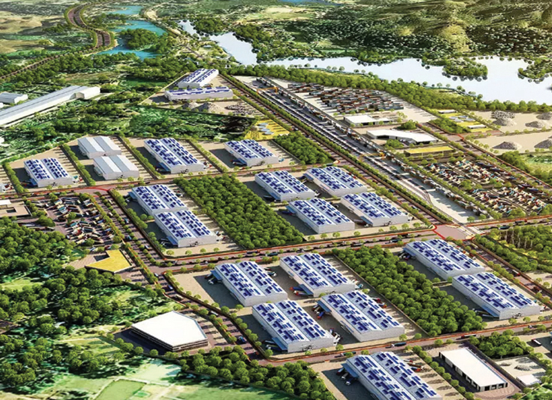
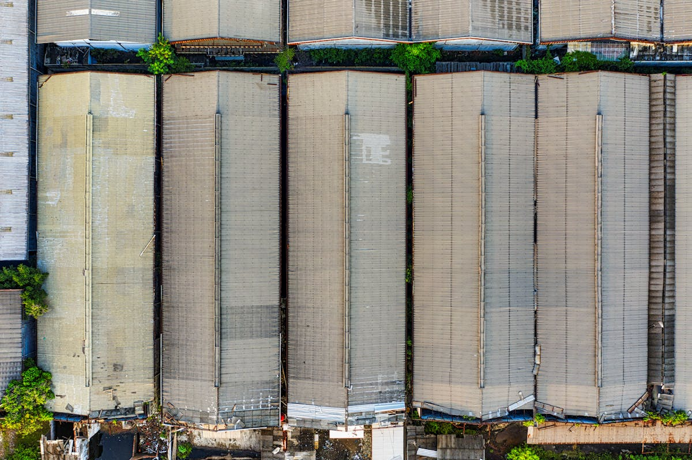
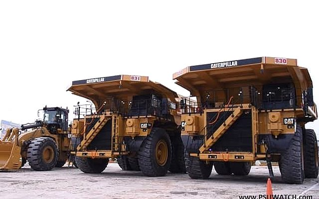
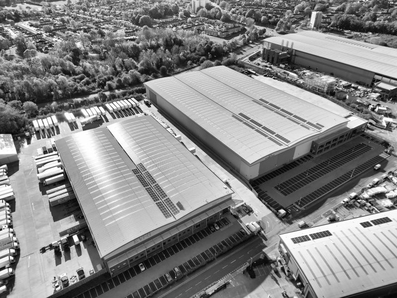
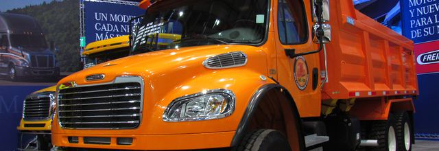
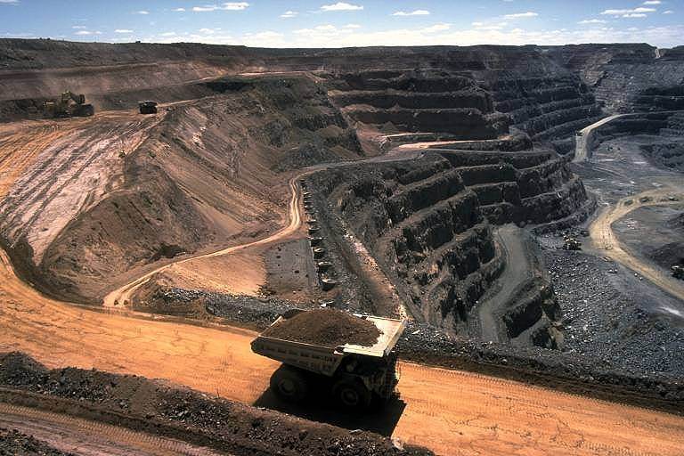
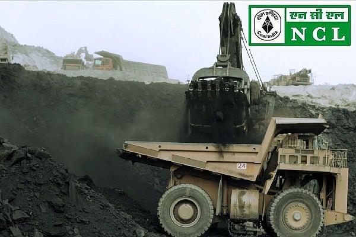

सुविकल्प: Mine Repurposing Tool
Select factors and sub-factors to discover suitable repurposing options for your mining site
![Coal Controller Organisation emblem]()

Project concept, strategic rationale, site suitability matrix and indicative scale options for developing a logistics park or MMLP on closed coal mine land.
This concept proposes the development of Logistics Park Zones / Multi-Modal Logistics Park Zones on closed, reclaimed, stabilized, or repurposed coal mine land as part of a sustainable mine-closure and post-mining land-use strategy.
The objective is to convert under-utilized mine land into a productive logistics, warehousing, transportation, aggregation, distribution, and value-added supply-chain asset centered around:
Unlike heavy industrial reuse, a logistics park uses large land parcels productively without requiring very high-density manufacturing activity; leverages existing mine roads, rail connectivity, power infrastructure and industrial buffers; and supports local employment in warehousing, transport, handling, security, maintenance, packaging, administration and facility management.
This aligns with India's mine-closure shift toward productive and community-oriented repurposing, as reflected in frameworks such as L.I.V.E.S., R.E.C.L.A.I.M. and A.R.T.H.A. The concept is also aligned with India's broader logistics policy direction — Government of India has approved 35 Multi-Modal Logistics Park locations to improve logistics efficiency and reduce logistics costs, being developed through PPP on DBFOT basis in a hub-and-spoke model.
A Logistics Park is particularly suited for closed coal mine areas where large land parcels, heavy vehicle access, existing industrial roads, rail proximity, power corridors and buffer distances are already available or can be upgraded.
PM GatiShakti is intended to address connectivity gaps and enable seamless movement of people, goods and services with cost efficiency. A mine-area logistics park can support this objective if it is located near highways, rail corridors, industrial clusters, ports, consumption centres or mineral / agricultural production belts.
The following matrix provides a structured checklist for assessing the suitability of the proposed site for the selected repurposing option. It identifies the key physical, technical, environmental, infrastructure, legal, and owner-side readiness parameters that should be reviewed before the project is advanced to the next stage of development. The purpose of this matrix is to help the project owner understand existing site conditions, technical requirements, potential constraints, and preparatory actions required before feasibility studies, approvals, or tendering are initiated.
| Main Category | What to Assess / Prepare | Why it Matters | Owner-Side Readiness |
|---|---|---|---|
| Land status | Closure status, ownership, lease conditions, land-use permissibility | Legal viability for logistics, warehousing and transport use | Closure note and land-use permissibility note |
| Mine stability | Subsidence risk, dump stability, slope stability, void proximity, highwall safety | Ensures safe use by trucks, warehouses, workers and visitors | Geotechnical and mine-stability report |
| Landform | Flatness, grading requirement, platform levels, cut-fill balance | Warehouses and yards need stable, level platforms | Topographic survey and grading plan |
| Soil condition | Bearing capacity, compaction, settlement risk, contamination, dust potential | Required for heavy vehicles, racking systems, paved yards and buildings | Soil testing and contamination screening |
| Drainage | Stormwater runoff, waterlogging, erosion, mine-water interaction | Prevents cargo damage, road failure and yard flooding | Drainage and erosion-control plan |
| Access | Highway access, approach-road width, turning radius, last-mile connectivity | Determines freight movement efficiency and truck circulation | Access and traffic plan |
| Rail connectivity | Existing siding, nearest station, rail corridor, land for rail spur | Important for multimodal logistics and bulk cargo | Rail feasibility note |
| Cargo catchment | Nearby industries, mines, agriculture markets, manufacturing clusters, ports | Determines demand and revenue potential | Cargo-demand assessment |
| Utilities | Power, water, sewage, telecom, internet, lighting, CCTV | Required for continuous park operation | Utility readiness plan |
| Truck movement | Entry / exit control, parking, loading bays, queuing space, weighbridge | Prevents congestion and improves safety | Internal circulation plan |
| Warehouse suitability | Plot sizes, floor loading, clear height, fire access, racking potential | Determines whether modern warehousing is feasible | Warehouse concept plan |
| Cold chain feasibility | Power reliability, backup power, temperature control demand | Useful for food, pharma, perishables and e-commerce | Cold-chain feasibility note |
| Environmental quality | Dust, air quality, noise, residual pollution, nearby active mining | Affects workers, goods, vehicles and approvals | Environmental screening |
| Safety zoning | Buffer from unsafe mine areas, water bodies, dumps, highwalls and restricted zones | Protects users from mine-related hazards | Zoning and barricading plan |
| Community interface | Nearby settlements, road safety, employment expectations, traffic concerns | Critical for social acceptance | Stakeholder consultation note |
| Digital systems | Gate automation, warehouse management, vehicle tracking, RFID, weighbridge integration | Improves transparency and operational efficiency | Digital logistics concept note |
| Security | Boundary, access control, CCTV, cargo security, fire safety | Required for commercial users and insurers | Security and fire-safety plan |
| O&M readiness | Road maintenance, yard cleaning, lighting, security, equipment, drainage upkeep | Determines long-term sustainability | O&M cost and staffing plan |
The following matrix presents an indicative relationship between available site area, project scale, technical configuration, and likely development potential. It is intended to support preliminary planning by helping the project owner identify the appropriate scale and configuration for the proposed repurposing option. The values and recommendations are indicative and should be refined through detailed feasibility studies, site surveys, engineering assessments, and relevant technical and commercial evaluations.
Final sizing should depend on land stability, road / rail connectivity, cargo demand, approved post-closure land use, funding availability, private-sector interest and whether the project is meant for local warehousing, district logistics, regional multimodal logistics or national supply-chain integration. For benchmarking, the Bengaluru MMLP is being developed over 400 acres; Chennai at about 184 acres and Indore at about 255 acres.
| Land Area | Recommended Scale | Configuration | Use Case |
|---|---|---|---|
| 5–20 ha | Local logistics and truck support zone | Truck parking, small warehouses, weighbridge, repair bay, fuel / EV charging, toilets, driver rest area, local goods aggregation | Local freight support, mine-area transport, nearby markets and small industries |
| 20–50 ha | Community / district logistics park | Warehousing blocks, truck terminal, packaging / sorting sheds, cold rooms, open storage, admin, security, internal roads | District-level storage, agro-logistics, MSME distribution and local employment |
| 50–100 ha | Integrated logistics and warehousing park | Larger warehouses, e-commerce fulfilment, cold chain, container yard, service area, parking, value-added processing | Regional distribution hub for industry, agriculture, retail and e-commerce |
| 100–200 ha | Multi-modal logistics park | Road-linked and rail-linked cargo handling, warehousing, container yard, truck terminal, cold chain, customs / bonded areas where feasible | Regional multimodal freight hub |
| 200–400 ha | Large MMLP / regional freight gateway | Rail siding, container terminal, bulk / break-bulk handling, large warehouses, logistics offices, maintenance, digital control centre | Large regional logistics anchor with PPP potential |
| 400 ha+ | Flagship logistics and industrial supply-chain ecosystem | Multi-phase MMLP, rail-road integration, warehousing, value-added logistics, cold chain, e-commerce, light assembly, truck village, green buffer | National-scale hub where land, cargo demand, road and rail connectivity are strong |
Implementation models for structuring a logistics park project — from owner-led EPC to PPP concessions, DBFOT, and hybrid mine-closure-plus-logistics approaches.
The following table outlines the possible implementation models that may be considered for developing the proposed repurposing project. These models differ in terms of ownership structure, funding responsibility, private sector participation, operational control, and long-term risk allocation. The purpose of this table is to help the project owner compare broad development routes and select an implementation approach that aligns with its financial capacity, institutional preference, risk appetite, and long-term asset management objectives.
The implementation approach should be selected based on the mine owner's ownership preference, funding capacity, logistics expertise, phasing requirements, and whether the park is intended for captive use, public logistics, or private commercial operation.
| Model Group | Model | Core Feature | Broad Suitability |
|---|---|---|---|
| Owner-led | EPC | Mine owner funds and retains full ownership; EPC contractor undertakes engineering, procurement and construction | Suitable where the owner wants full control and has funding capacity, for basic logistics assets such as internal roads, truck parking, weighbridge, boundary, lighting and small warehouses |
| Owner-led | EPC + O&M / Facility Management | Owner funds and owns the park; specialized O&M / FM agency operates and maintains common utilities, security, truck terminal, warehouses and user facilities | Suitable where the owner wants long-term control and revenue rights but does not want to directly manage day-to-day logistics operations and facility services |
| Developer-led / PPP | BOOT | Private developer finances, builds, owns and operates during concession period, then transfers the asset back to the mine owner / authority | Suitable where the owner wants to reduce upfront CAPEX, bring in private logistics expertise, generate concession income, and receive the developed asset after the concession period |
| Developer-led / PPP | BOO | Private developer finances, develops, owns and operates on a long-term basis without mandatory transfer | Suitable only where long-term private ownership is acceptable and the owner's benefit is mainly through lease rent, fixed charges or revenue share |
| Developer-led / PPP | DBFOT | Private concessionaire designs, builds, finances, operates and transfers the park under structured PPP concession | Highly suitable for large logistics park / MMLP-style projects requiring private finance, multimodal integration, long-term operation and eventual transfer |
| Concession-based | Concession / Lease-Develop-Operate | Mine owner provides land or development rights; concessionaire leases, develops, operates, maintains and commercialises the park as per agreed conditions | Very suitable where the mine owner wants to retain land ownership while allowing an experienced logistics operator to invest, develop and generate revenue from the park |
| Mixed | Hybrid | Combines owner-side support (land, site preparation, access, safety zoning, basic infrastructure) with private investment in warehouses, truck terminal, cold chain, digital systems and operations | Most suitable where the project must balance mine-closure obligations, logistics development, private investment, local employment, phased implementation, and commercial viability |
The following comparative assessment evaluates the major implementation models across key decision parameters such as investment requirement, ownership control, financing responsibility, contractual complexity, risk transfer, and long-term economic benefit. This matrix is intended to support early-stage decision-making by highlighting the relative strengths and limitations of each model. The final choice of model should be guided by the specific circumstances of the project, including its scale, commercial viability, applicable policy framework, and the owner's institutional preference.
| Evaluation Parameter | EPC | EPC + O&M / FM | BOOT | BOO | DBFOT | Concession / LDO | Hybrid |
|---|---|---|---|---|---|---|---|
| Upfront investment by Mine Owner | High | High to Moderate | Low to Moderate | Low | Low to Moderate | Low to Moderate | Variable |
| Need for private financing | Low | Low to Moderate | High | High | High | Moderate to High | Variable |
| Ownership retained by Mine Owner | Yes | Yes | Land retained; asset may transfer later | Limited / as structured | Usually land retained with reversion rights | Land retained by owner | Usually retained by owner |
| Suitability for logistics infrastructure | Moderate | High | High | Moderate | Very High | Very High | Very High |
| Suitability for local livelihood | Moderate | High | High | Moderate | High to Very High | Very High | Very High |
| Suitability for multimodal integration | Low to Moderate | Moderate | High | Moderate | Very High | High to Very High | Very High |
| Suitability for phased development | Moderate | High | High | Moderate | Very High | Very High | Very High |
| Revenue potential | Moderate | Moderate to High | High | High | High | Moderate to High | Variable to High |
| O&M burden on owner | High | Moderate | Low | Low | Low | Low to Moderate | Shared |
| Commercial bankability | Low to Moderate | Moderate | High | High | Very High | High | Variable to High |
| Overall suitability for Logistics Park | Moderate | High | High | Moderate | Very High | Very High | Very High / Most Suitable |
The following table explains how major project responsibilities are typically allocated under different implementation models. It covers key functional areas such as site availability, financing, design and construction, regulatory approvals, operation and maintenance, revenue collection, asset ownership, and end-of-term transfer. This helps clarify the respective roles of the project owner, private developer, EPC contractor, operator, or concessionaire, and supports the preparation of tender documents and contractual structures.
| Responsibility Area | EPC | EPC + O&M / FM | BOOT | BOO | DBFOT | Concession / LDO | Hybrid |
|---|---|---|---|---|---|---|---|
| Site / land availability | Mine Owner | Mine Owner | Mine Owner / authority | Mine Owner / developer, as agreed | Mine Owner / authority | Mine Owner / authority | Mine Owner / shared |
| Land ownership | Mine Owner | Mine Owner | Mine Owner retains land; developer gets project rights | As structured | Mine Owner generally retains land | Mine Owner retains land | Mine Owner generally retains land |
| Mine closure linkage | Mine Owner | Mine Owner | Mine Owner + developer compliance | Mine Owner / developer | Mine Owner + concessionaire | Mine Owner + concessionaire | Mine Owner + partners |
| Geotechnical & stability screening | Mine Owner / consultant | Mine Owner / consultant | Shared | Shared | Shared | Shared | Mine Owner initially; shared later |
| Cargo demand assessment | Mine Owner / consultant | Mine Owner + FM agency | Developer / logistics expert | Developer | Concessionaire | Concessionaire / expert agency | Shared |
| Logistics master planning | Mine Owner / consultant | Mine Owner + FM agency | Shared / developer-refined | Developer-led | Shared | Shared | Shared |
| Road, yard & warehouse development | EPC contractor | EPC contractor / FM agency | Developer | Developer | Concessionaire | Concessionaire / operator | Owner + operator / PPP partner |
| Rail siding / terminal | Owner / rail agency / contractor | Owner + FM agency | Developer / rail partner | Developer | Concessionaire | Concessionaire / rail partner | Shared |
| Cold chain infrastructure | EPC contractor / specialist | FM agency / specialist | Developer | Developer | Concessionaire | Concessionaire / specialist | Shared |
| Digital logistics systems | Owner-defined | Owner + FM agency | Developer | Developer | Concessionaire | Concessionaire / operator | Shared |
| Day-to-day facility operations | Mine Owner | O&M / FM agency | Developer | Developer | Concessionaire | Concessionaire / operator | Operator / shared |
| Tenant / warehouse leasing | Mine Owner | Mine Owner / operator | Developer | Developer | Concessionaire | Concessionaire / shared | Shared |
| Local employment | Mine Owner-controlled | Contract-controlled | Contract-based | Developer policy / contract-based | Contract-based | Strongly contract-based | Strongly configurable |
| Revenue collection & sharing | Mine Owner (receives all) | Mine Owner / operator on behalf of owner | Concession fee / revenue share | Lease / fixed charges | Concession fee / revenue share | Lease rent / concession fee / revenue share | As structured |
| Asset transfer at end | No | No | Yes | No | Yes | As agreed | As agreed |
Funding logic, revenue generation pathways, and combined profitability-livelihood assessment for logistics park projects.
The following table presents the broad funding logic for each implementation model. It explains who is expected to finance the project, the level of owner-side funding requirement, and the commercial rationale behind each structure. This section is intended to help the project owner assess whether the project is more suitable for owner-funded development, private investment, public-private partnership, lease or concession structure, or a hybrid funding arrangement.
| Model | Funding Source | Owner Funding Requirement | Suitability for Logistics Park |
|---|---|---|---|
| EPC | Mine owner budget / closure-linked fund / institutional funding / debt | High | Suitable for basic logistics infrastructure, internal roads, parking, weighbridge, boundary, lighting and small warehouses |
| EPC + O&M / FM | Mine owner budget + O&M budget + logistics facility revenue | High to Moderate | Strong fit where owner wants control over land, user charges, community benefit and facility management |
| BOOT | Private developer capital + debt + possible VGF / grant support | Low to Moderate | Suitable for large logistics parks where developer recovers investment and transfers assets at the end |
| BOO | Private developer capital | Low | Suitable only where long-term private control is acceptable and owner revenue is mainly lease-based |
| DBFOT | Private concessionaire + project finance + possible public support / VGF | Low to Moderate | Strongest fit for large MMLP-style PPP logistics projects; aligned with GoI's national MMLP programme |
| Concession / Lease-Develop-Operate | Private logistics operator / warehouse developer / institutional investor / blended finance | Low to Moderate | Very suitable where mine owner provides land and receives lease rent, concession fee or revenue share |
| Hybrid | Mine owner + private operator + government support + CSR + grants + infrastructure finance | Variable | Most suitable for balancing mine-closure objectives, logistics development, livelihood and phased investment |
The following table explains how revenue may be generated under different implementation models and identifies who is likely to receive the principal project income. It also describes the nature and extent of the financial benefit available to the project owner, whether through direct project revenue, cost savings, lease income, concession fees, revenue sharing, service charges, or eventual asset transfer. This comparison is intended to support the selection of a commercially appropriate model for the proposed repurposing project.
| Model | How Revenue is Generated | Who Receives Main Revenue | Owner's Financial Benefit |
|---|---|---|---|
| EPC | Warehouse rent, truck parking, weighbridge charges, loading / unloading fees, open storage, cold storage, repair bays, fuel / EV charging lease, kiosks and service charges | Mine Owner | Full revenue retained by owner, but owner bears full CAPEX, O&M, demand and maintenance risk |
| EPC + O&M / FM | Same revenue streams: warehouse rent, parking, yard charges, handling, utilities, service charges, tenant rentals and user fees | Mine Owner after paying O&M / FM agency | High benefit; owner retains revenue while outsourcing facility operations and maintenance |
| BOOT | Developer earns from warehouses, truck terminal, cargo handling, cold chain, tenant leases, parking, service areas and value-added logistics during concession | Developer / concessionaire during concession | Lease rent, concession fee, revenue share, local economic uplift and asset transfer at end |
| BOO | Long-term private revenue from warehousing, logistics, truck terminal, cold chain, e-commerce fulfilment and commercial services | Private developer | Limited direct benefit; typically lease rent, fixed charges or premium payments |
| DBFOT | Structured revenue from warehousing, multimodal cargo handling, container yard, truck terminal, cold chain, logistics offices and support services | Concessionaire during concession | Concession fee, lease rent, revenue share, performance-linked payments and transfer at end |
| Concession / Lease-Develop-Operate | Revenue from logistics operations, warehouse leasing, truck terminal, cargo handling, cold chain, repair, parking, service yards and tenant operations | Concessionaire / operator as per agreement | Lease rentals, revenue share, concession fee, improved land value and indirect socio-economic benefits |
| Hybrid | Mixed revenue from public-use logistics, private warehousing, industrial users, truck services, cold chain, CSR support, grants and shared commercial income | Shared between owner, operator and partners as structured | Variable to high; owner benefits through revenue share, reduced O&M burden, ESG gains and enhanced land value |
The following table assesses the likely local livelihood and employment potential of each implementation model. It considers the extent to which each model can support construction-phase jobs, long-term operational employment, local procurement opportunities, skill development, community participation, and associated support services. This section is particularly relevant where the repurposing project is expected to contribute to post-mining or post-operational economic transition and sustained local community benefit.
| Model | Local Job Potential | Why | Overall Suggestibility |
|---|---|---|---|
| EPC | High | Generates significant local employment during construction, road-building, warehousing, and infrastructure development. Long-term jobs depend on the owner's approach to operational staffing, security, and maintenance. | High |
| EPC + O&M / FM | High to Very High | Supports sustained long-term employment across facility operations, warehouse management, yard supervision, security, cleaning, logistics coordination, and local vendor services. Owner can mandate local hiring obligations. | Very High / Most Suitable |
| BOOT | High | Generates substantial construction-phase and operational employment over the concession period. Local hiring, driver training, material handling, maintenance, and logistics support obligations can be built into the concession agreement. | High — contractually mandatable |
| BOO | Moderate to High | Creates construction and long-term operational employment. Local benefit depends on the private developer's staffing and procurement practices and any contractual community obligations. | Moderate to High |
| DBFOT | High to Very High | Large-scale construction and sustained operational employment through warehousing, terminal management, cargo handling, and logistics support. Local employment obligations can be embedded in concession conditions. | Very High |
| Concession / Lease-Develop-Operate | High to Very High | Supports direct and indirect employment through logistics operations, warehouse management, yard services, truck support, and local enterprise participation. Outcomes depend on the strength of concession terms. | Very High |
| Hybrid | Very High | Strongest model for integrating logistics efficiency with community benefit. Enables explicit provisions for local enterprises, drivers, warehouse staff, SHGs, skill-development programmes, and women-led local enterprises. | Very High / Most Suitable |
The following combined comparison brings together three important dimensions of project structuring: revenue potential, owner-side financial benefit, and local livelihood generation. It provides a consolidated view of how each implementation model performs across commercial, institutional, and community-development perspectives. This matrix is intended to support balanced decision-making where the objective extends beyond financial return to include sustainable site reuse and long-term local economic benefit.
The following table assesses the likely local livelihood and employment potential of each implementation model. It considers the extent to which each model can support construction-phase jobs, long-term operational employment, local procurement opportunities, skill development, community participation, and associated support services. This section is particularly relevant where the repurposing project is expected to contribute to post-mining or post-operational economic transition and sustained local community benefit.
| Model | Main Revenue Source | Owner Profitability | Local Job Creation | Overall Comment |
|---|---|---|---|---|
| EPC | Warehouse rent, truck parking, weighbridge, open storage, service charges | Moderate to High, but owner bears full CAPEX, O&M and demand risk | Moderate | Useful for initial logistics infrastructure; weak for professional long-term operation unless followed by structured O&M |
| EPC + O&M / FM | Facility rentals, user charges, warehouse leases, parking, handling, service yards and tenant fees | High — owner retains revenue after O&M payments | High | Strong where owner wants control and sustained employment |
| BOOT | Commercial logistics operation, warehouses, terminal charges, truck services, cold chain and tenant leases | Moderate — through concession fee, lease rent, revenue share and eventual asset transfer | High | Suitable for commercial logistics infrastructure with mandatory livelihood clauses |
| BOO | Long-term private revenue from logistics estate, warehousing, cold chain, e-commerce and terminal services | Low to Moderate — mostly from lease rent or fixed charges | Moderate | Use cautiously where community benefit and owner control are not primary |
| DBFOT | MMLP value chain, multimodal cargo, warehousing, terminal services, cold chain and support services | Moderate to High — through concession fee, lease rent, revenue share and transfer terms | High to Very High | Strongest formal PPP option for large logistics parks |
| Concession / LDO | Logistics operations, warehouse leasing, truck terminal, cargo handling, cold chain, service yards and tenant operations | Moderate to High — through lease rent, concession fee, revenue share and improved land value | Very High | Very suitable for mine land where owner retains land and operator manages business |
| Hybrid | Mixed revenue from logistics use, private operators, public support, warehousing, service facilities and grants | Variable to High depending on revenue-sharing structure | Very High | Most suitable for balancing mine-closure, livelihood, logistics efficiency and commercial objectives |
Owner-side readiness checklist before first RFP, post-award workstreams, and indicative implementation pathway for logistics park development on closed coal mine land.
The following section identifies the key owner-side preparatory actions that should ideally be completed before issuing the first Request for Proposal. These actions are aimed at reducing uncertainty for prospective bidders, improving project bankability, clarifying site availability, identifying approval pathways and risks, and defining the technical and commercial scope of the project. Completing these preparatory steps before tendering can improve bid quality, attract credible responses, and reduce the risk of delays during project implementation.
Before issuing an RFP for a Logistics Park / Multi-Modal Logistics Park based mine repurposing project, the mine owner should prepare the following in priority order:
The following section lists the principal activities that may be undertaken by the selected contractor, developer, concessionaire, operator, or implementation agency after award of the project. These activities generally include detailed site investigations, engineering design, statutory submissions and approvals, equipment procurement, construction, commissioning, operational planning, staff training, and performance monitoring. The distinction between pre-RFP owner preparedness and post-award implementation responsibilities helps ensure an appropriate and efficient allocation of effort across the project development cycle.
After award, the selected concessionaire / developer / logistics operator / O&M agency can take up the following activities in chronological order:
The following implementation pathway presents a practical high-level sequence for advancing the proposed repurposing concept from initial approval through to project execution and long-term operation. It outlines the broad stages of concept approval, preliminary studies, model selection, bid preparation, procurement, detailed design, statutory approvals, construction, commissioning, and ongoing operation. This pathway is indicative and should be adapted to reflect the specific complexity, regulatory requirements, financing structure, and site conditions applicable to the project.
Way forward recommendations, key references, and abbreviations for logistics park and MMLP development on mine closure sites.
The following way forward summarizes the preferred development approach for the proposed repurposing option, based on the assessment presented in PRISM (Post Mining Repurposing Implementation and Strategy Models). It identifies the most suitable implementation models in order of preference, highlights key technical and due-diligence considerations, and outlines the recommended next steps and broad development logic. This section is intended to guide internal decision-making and support the project owner in progressing from concept-stage evaluation toward feasibility assessment, project structuring, regulatory approvals, and implementation planning.
Preferred Models, in order: (1) Concession / Lease-Develop-Operate, (2) DBFOT, (3) Hybrid
Why preferred: Concession / Lease-Develop-Operate is preferred because logistics parks require private warehousing capability, tenant development, cargo demand and specialist operation. The mine owner retains land control while transferring market and operating risks.
Secondary option: EPC + O&M may be used only where the owner wants strong control over user charges, local employment and facility standards under a clear public or captive logistics use case.
Suggestable technical care: Road / rail access, cargo demand, land stability, truck movement, drainage, utilities, fire safety, warehousing layout, weighbridge, security and tenant demand must be assessed.
Recommended development logic: Start with land screening, cargo mapping and access planning. Develop in phases through warehousing, truck terminal, cold chain, e-commerce and value-added logistics based on tenant absorption.
Disclaimer — All repurposing interventions proposed under P.R.I.S.M. shall remain subject to applicable mining laws, land-use regulations, environmental approvals, mine-closure conditions, forest and biodiversity regulations, groundwater permissions, and any other statutory approvals as may be applicable. Land ownership is proposed to remain with the mine owner / competent authority unless otherwise permitted under applicable law.
| Abbreviation | Full Form |
|---|---|
| BOO | Build, Own, Operate |
| BOOT | Build, Own, Operate, Transfer |
| CAPEX | Capital Expenditure |
| CCO | Coal Controller's Organisation |
| CSR | Corporate Social Responsibility |
| DBFOT | Design, Build, Finance, Operate, Transfer |
| DPIIT | Department for Promotion of Industry and Internal Trade |
| DPR | Detailed Project Report |
| EPC | Engineering, Procurement and Construction |
| ESG | Environmental, Social and Governance |
| FM | Facility Management |
| MMLP | Multi-Modal Logistics Park |
| MoRTH | Ministry of Road Transport and Highways |
| O&M | Operation and Maintenance |
| PPP | Public-Private Partnership |
| RFP | Request for Proposal |
| VGF | Viability Gap Funding |








Links open external websites. Coal Controller Organisation does not endorse third-party content.


.png)


Disclaimer: Inclusion of an agency on this list does not constitute endorsement, empanelment, or recommendation by the Coal Controller Organisation or the Ministry of Coal, Government of India. Mine owners and project proponents are advised to conduct their own due diligence process before engaging any agency.
Disclaimer: Inclusion of an expert does not constitute endorsement, empanelment, or recommendation by the Coal Controller Organisation or the Ministry of Coal, Government of India. Users are advised to independently verify credentials and suitability before engaging any individual.